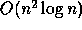

From Programming Parallel Algorithms.
Communications of the ACM, 39(3), March, 1996.


Next: About this document
Up: Programming Parallel Algorithms
Previous: Acknowledgments
References
- 1
-
Alfred V. Aho, John E. Hopcroft, and Jeffrey D. Ullman.
The Design and Analysis of Computer Algorithms.
Addison-Wesley, Reading, MA, 1974.
- 2
-
Alfred V. Aho and Jeffrey D. Ullman.
Foundations of Computer Science.
Computer Science Press, New York, 1992.
- 3
-
Arvind, Rishiyur S. Nikhil, and Keshav K. Pingali.
I-structures: Data structures for parallel computing.
ACM Transactions on Programming Languages and Systems,
11(4):598-632, October 1989.
- 4
-
Guy E. Blelloch.
Vector Models for Data-Parallel Computing.
MIT Press, 1990.
- 5
-
Guy E. Blelloch.
NESL: A nested data-parallel language (version 2.6).
Technical Report CMU-CS-93-129, School of Computer Science, Carnegie
Mellon University, April 1993.
- 6
-
Guy E. Blelloch, Siddhartha Chatterjee, Jonathan C. Hardwick, Jay Sipelstein,
and Marco Zagha.
Implementation of a portable nested data-parallel language.
Journal of Parallel and Distributed Computing, 21(1):4-14,
April 1994.
- 7
-
Guy E. Blelloch and John Greiner.
Parallelism in sequential functional languages.
In Proceedings of the Symposium on Functional Programming and
Computer Architecture, pages 226-237, June 1995.
- 8
-
Guy E. Blelloch and Jonathan C. Hardwick.
Class notes: Programming parallel algorithms.
Technical Report CMU-CS-93-115, School of Computer Science, Carnegie
Mellon University, February 1993.
- 9
-
Richard P. Brent.
The parallel evaluation of general arithmetic expressions.
Journal of the Association for Computing Machinery,
21(2):201-206, 1974.
- 10
-
K. Mani Chandy and Jayadev Misra.
Parallel Program Design: A Foundation.
Addison-Wesley, Reading, MA, 1988.
- 11
-
T. H. Cormen, C. E. Leiserson, and R. L. Rivest.
Introduction to Algorithms.
The MIT Press and McGraw-Hill, 1990.
- 12
-
John T. Feo, David C. Cann, and Rodney R. Oldehoeft.
A Report on the Sisal Language Project.
Journal of Parallel and Distributed Computing, 10(4):349-366,
December 1990.
- 13
-
Phil Hatcher, Walter F. Tichy, and Michael Philippsen.
A critique of the programming language C .
Communications of the ACM, 35(6):21-24, June 1992.
- 14
-
High Performance Fortran Forum.
High Performance Fortran Language Specification, May
1993.
- 15
-
W. Daniel Hillis and Guy L. Steele Jr.
Data parallel algorithms.
Communications of the ACM, 29(12):1170-1183, December 1986.
- 16
-
Joseph JáJá.
An Introduction to Parallel Algorithms.
Addison Wesley, Reading, Mass., 1992.
- 17
-
Richard M. Karp and Vijaya Ramachandran.
Parallel algorithms for shared memory machines.
In J. Van Leeuwen, editor, Handbook of Theoretical Computer
Science--Volume A: Algorithms and Complexity. MIT Press, Cambridge, Mass.,
1990.
- 18
-
Peter H. Mills, Lars S. Nyland, Jan F. Prins, John H. Reif, and Robert A.
Wagner.
Prototyping parallel and distributed programs in Proteus.
Technical Report UNC-CH TR90-041, Computer Science Department,
University of North Carolina, 1990.
- 19
-
Robin Milner, Mads Tofte, and Robert Harper.
The Definition of Standard ML.
MIT Press, Cambridge, Mass., 1990.
- 20
-
Franco P. Preparata and Michael I. Shamos.
Computational Geometry--An Introduction.
Springer-Verlag, New York, 1985.
- 21
-
J. R. Rose and G. L. Steele Jr.
C*: An extended C language for data parallel programming.
In Proceedings Second International Conference on
Supercomputing, Vol. 2, pages 2-16, May 1987.
- 22
-
J. T. Schwartz, R. B. K. Dewar, E. Dubinsky, and E. Schonberg.
Programming with Sets: An Introduction to SETL.
Springer-Verlag, New York, 1986.
- 23
-
Yossi Shiloach and Uzi Vishkin.
An

parallel Max-Flow algorithm.
J. Algorithms, 3:128-146, 1982.
- 24
-
Jay Sipelstein and Guy E. Blelloch.
Collection-oriented languages.
Proceedings of the IEEE, 79(4):504-523, April 1991.
- 25
-
Uzi Vishkin.
Parallel-design distributed-implementation (PDDI) general purpose
computer.
Theoretical Computer Science, 32:157-172, 1984.
Guy Blelloch, blelloch@cs.cmu.edu